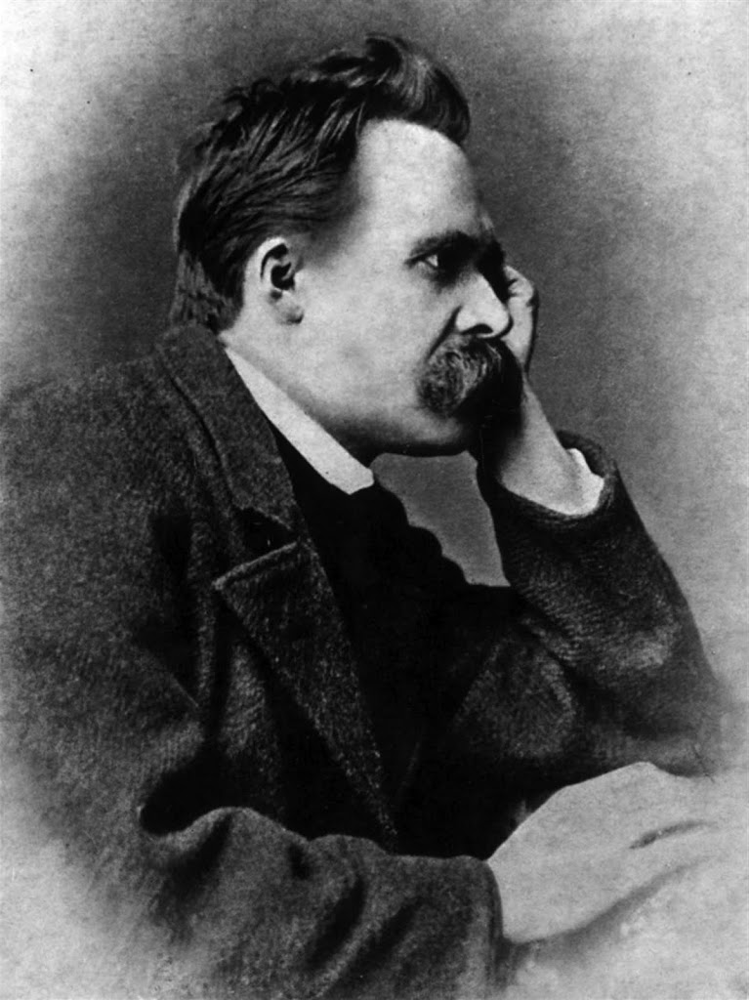

He began his career as a classical philologist before turning to philosophy. He became the youngest ever to hold the Chair of Classical Philology at the University of Basel in 1869 at the age of 24.
Nietzsche resigned in 1879 due to health problems that plagued him most of his life; he completed much of his core writing in the following decade. In 1889 at age 44, he suffered a collapse and afterward, a complete loss of his mental faculties.

He lived his remaining years in the care of his mother until her death in 1897 and then with his sister Elisabeth Förster-Nietzsche. Nietzsche died in 1900.